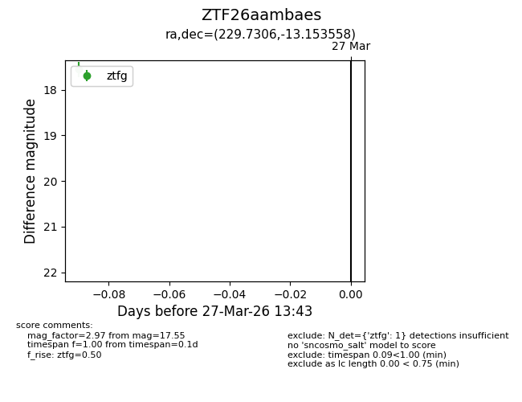
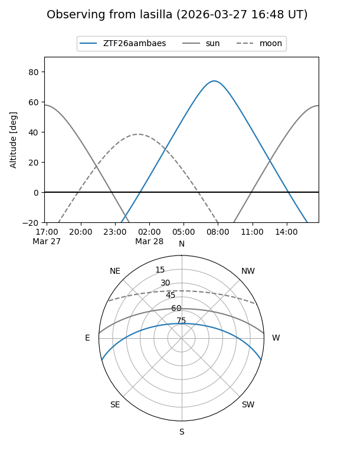
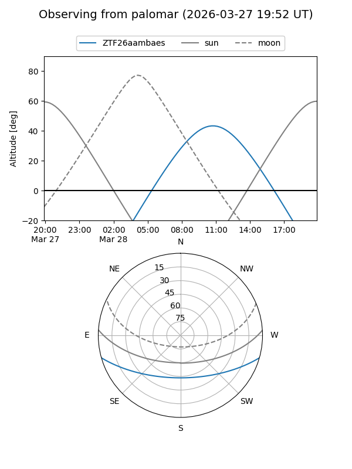

ZTF26aambaes
Target ZTF26aambaes at 2026-03-27 13:45
Aliases and brokers:
FINK: link
Lasair: link
ALeRCE: link
alt names
ZTF26aambaes (ztf,fink_ztf)
Coordinates:
equatorial (ra, dec) = 229.7306,-13.15356
equatorial (HMS+DMS) = 15:18:55.33,-13:09:12.81
galactic (l, b) = (349.2630,+36.12404)
Flags:
Photometry:
last ztfg=17.55
1 ztfg detections
Lightcurve

Visibility


Additional plots